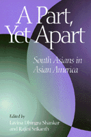

<body bgcolor="#FFFFFF" text="#000000" link="#0000FF" vlink="#CC0000" alink="#CC0000"><center><hr width="350" size="1" align="center" noshade>The first comprehensive study of the peripheral position and invisibility of South Asian perspectives within Asian America<hr width="350" size="1" align="center" noshade><p><a href="https://cdcshoppingcart.uchicago.edu/Cart/ChicagoBook.aspx?ISBN=9781566395779&&PRESS=temple" target="_top">Buy this book!</a> | <a href="https://cdcshoppingcart.uchicago.edu/Cart/Cart.aspx?PRESS=temple" target="_top">View Cart</a> | <a href="https://cdcshoppingcart.uchicago.edu/Cart/Cart.aspx?PRESS=temple" target="_top">Check Out</a></p><p></p></center><!--none//--><h1>A Part, Yet Apart</h1>
<H2>South Asians in Asian America</H2>
<h3>edited by Lavina Dhingra Shankar and Rajini Srikanth</h3>
<P>cloth 1-56639-577-1 $80.50, Jan 98, <FONT COLOR=#990033>Available</FONT>
<br>paper 1-56639-578-X $33.95, Jan 98, <FONT COLOR=#990033>Available</FONT>
<br>Electronic Book 1-43990-455-3 $33.95 <FONT COLOR=#990033>Available</FONT>
<BR> 320 pp
6x9
</P><BLOCKQUOTE><I>"...provides an excellent introduction to Asian American studies. ... Offering different histories and deploying various analytics, the book entextualizes a community of debate and critique. These productive tensions supplement the richness of the volume's material, making </i>A Part, Yet Apart<i> a significant contribution."</i>
<br>&#151;<b><i>The Journal of Asian Studies</i></b><i></I></BLOCKQUOTE>
<p>As people from the cultures of the Indian subcontinent increasingly participate in the complex and often heated debates about race and ethnicity in the United States, they confront questions about naming and claiming an identity that designates their group in this country. To be sure, claiming any single identity omits, perhaps threatens to obliterate, the significant political, historical, economic, and religious differences between their countries of origin. However, the term "South Asian" is growing in acceptance among people in this country who trace their heritage to India, Pakistan, Sri Lanka, Bhutan, Bangladesh, Nepal, and Maldives because it acknowledges common interests while it allows for difference.
<p>This construction process parallels the gradual acceptance of the term "Asian American" by peoples primarily of East and Southeast Asian ancestry who found abundant reason to claim a shared identity in dealing with officialdom and an apparently intractable racism in this country. In time, "Asian American" has become a designation of collective pride for a wide range of peoples. In academic institutions and society generally, there are vexed questions about the term's inclusiveness and the dominance of established groups over more recent ones.
<p><i>A Part, Yet Apart: South Asians in Asian America</i> concerns itself with the extent to which South Asian Americans are and ought to be included within Asian America &#150 as that term is applied to academic programs and admission policies; grassroots community organizing and politics more broadly; and critical analyses of cultural products. Taken together these essays form a spirited dialogue on the dilemmas of identity politics, coalition building, and diasporics.
<BR>&nbsp;<h2>Excerpt</h2><P>Excerpt available at <a href="http://www.temple.edu/tempress">www.temple.edu/tempress</a></p>
<BR>&nbsp;<h2>Reviews</h2>
<p><i>"Given that the dazzling variety of subject positions and intersectionalities constitute a riddle that cannot be solved, this volume drives home the point that since we must continue puzzling, we might as well do it together on all fronts."</i>
<br>&#151;<b><i>Buchbesprechungen</i></b>
<BR>&nbsp;<h2>Contents</h2><P>
<p>Acknowledgments
<br>Foreword: South Asian Identity in America &#150 Rajiv Shankar
<br>Introduction: Challenging the Imperatives of South Asian American and Asian American Studies &#150 Lavina Dhingra Shankar and Rajini Srikanth
<p><b>Part I: Names and Labels</b>
<br>1. With Kaleidoscope Eyes: The (Potential) Dangers of Indentarian Coalitions &#150 Deepika Bahri
<br>2. Risking (Self) Naming: (South) Asian "Partitions" in the American Academy? &#150 Lavina Dhingra Shankar
<p><b>Part II: The (Dis)Connections of Race</b>
<br>3. Not Asian, White, or Black: Reflections on South Asian American Racial Identity &#150 Nazli Kibria
<br>4. Pahkar Singh's Argument with America: Color and the Structure of Race Formation &#150 Min Song
<p><b>Part III: Topologies of Activism</b>
<br>5. Crafting Solidarities &#150 Vijay Prashad
<br>6. At the Crossroads: College Activism and Its Impact on Identity Formation &#150 Anu Gupta
<br>7. From Campus to Community Politics: Perspectives in Organizing and Coalition Building in the Asian American Community &#150 Sumantra Tito Sinha
<br>8. The Call of Rice: The Queer South Asian American Community and the Queer Asian-American Community &#150 Sandip Roy
<br>9. Ram Yoshino Uppuluri's Campaign: The Implications for Panethnicity in Asian America &#150 Rajini Srikanth
<p><b>Part IV: Literary Texts and Diasporics</b>
<br>10. Reading of South Asian American Literature &#150 Ruth Yu Hsiao
<br>11. South Asian Americans and Diaspora &#150 Samir Dayal
<p>Contributors
<br>In the Series
</P><BR>&nbsp;<H2>About the Author(s)</H2>
<P><B>Lavina Dhingra Shankar</B> is Assistant Professor of English at Bates College, Maine.</P>
<table><tr><td valign="top"><img src="/tempress/authors/1300_au2.gif" height="90" width="75"></td><td width="100%" valign="middle"><p><b>Rajini Srikanth</b> is Professor of English at the University of Massachusetts, Boston.</P></td></tr></table>
<BR><H2>Subject Categories</H2>
<p><A HREF="/tempress/asian_amer.html" TARGET="_top">Asian American Studies</a>
<BR><A HREF="/tempress/race.html" TARGET="_top">Race and Ethnicity</a>
</p>
<BR><h2 class="inpageheading">In the series</H2>
<P><I><a href="http://www.temple.edu/tempress/asam_history.html" onMouseOver="window.status='Click for other books in this series!'; return true;" onMouseOut="window.status=''; return true;" target="_top">Asian American History and Culture</a></i>, edited by K. Scott Wong, Linda Trinh V�, and Cathy Schlund-Vials.
</p><p>Founded by Sucheng Chan in 1991, the <I>Asian American History and Culture</I>, series has sponsored innovative scholarship that has redefined, expanded, and advanced the field of Asian American studies while strengthening its links to related areas of scholarly inquiry and engaged critique. Like the field from which it emerged, the series remains rooted in the social sciences and humanities, encompassing multiple regions, formations, communities, and identities. Extending the vision of founding editor Sucheng Chan and emeriti editor Michael Omi and David Palumbo-Liu, series editors K. Scott Wong, Linda Trinh V�, and Cathy Schlund-Vials continue to develop a foundational collection that embodies a range of theoretical and methodological approaches to Asian American studies.</p>
<p align="center"><a href="https://cdcshoppingcart.uchicago.edu/Cart/ChicagoBook.aspx?ISBN=9781566395779&&PRESS=temple" target="_top">Buy this book!</a> | <a href="https://cdcshoppingcart.uchicago.edu/Cart/Cart.aspx?PRESS=temple" target="_top">View Cart</a> | <a href="https://cdcshoppingcart.uchicago.edu/Cart/Cart.aspx?PRESS=temple" target="_top">Check Out</a></p><p><font face="Arial" size="1"><a href="copyright.html" onMouseOver="window.status='Web Copyright Policy';return true;" onMouseOut="window.status=''" title="Web Copyright Policy">&copy;</a> 2015 <a href="http://www.temple.edu" target="new" onMouseOver="window.status='Link to Temple University home page';return true;" onMouseOut="window.status=''" title="Link to Temple University home page">Temple University</a>. All Rights Reserved. http://www.temple.edu/tempress/titles/1300_reg.html</font></p>